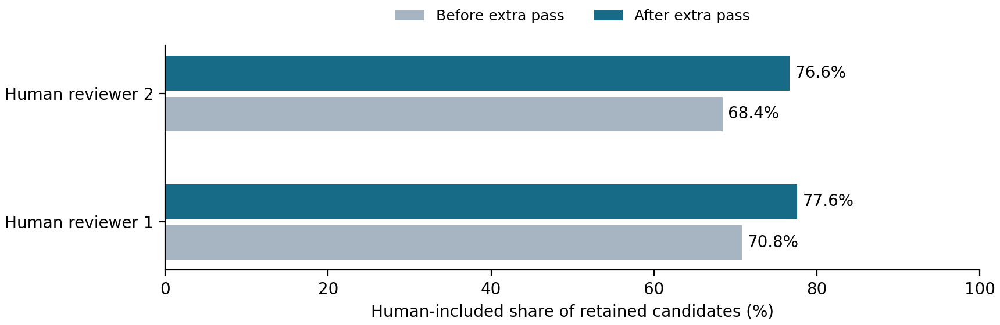
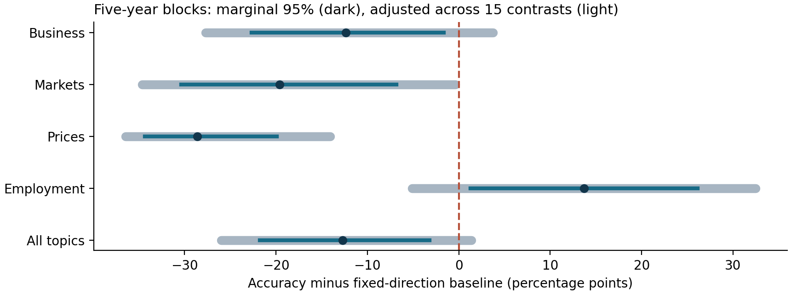

The most important findings
Annual ProQuest economy claims, 1900-2010 | Statistical evidence, practical impact, and limits
The strongest methods result is selective error removal: one extra verification pass raises candidate precision by about 7-8 percentage points, while sacrificing some valid claims. The clearest economic scoring result is a large price-forecast deficit relative to an always-rising-price baseline. No tested ML improvement has established corrected forecasting superiority.
| Priority | Finding | Evidence judgment |
|---|---|---|
| 1 / Methods | Extra verification enriches the retained sample: +6.77 to +8.24 pp precision. | Strong within the reviewed sample; both human references pass the new six-test correction and a 420-test stress bound. |
| 2 / Analysis | Price forecasts: 46.0% correct versus 74.5% for always rising prices. | Deficit survives simultaneous adjustment across five populations and three block lengths, conditional on machine labels. |
| 3 / Analysis | Market forecasts: 38.7% versus 58.3% for always rising stocks. | Also survives that local adjustment; five-year upper bound is near zero, so confidence is lower than for prices. |
| 4 / Economic lead | Other-topic outlooks are associated with later unemployment improvement. | Passes the original 204-test screen; fails some dependence/control challenges. A qualified candidate, not a settled finding. |
| ML / Status | Neural and other model gains remain unproven. | No pooled corrected ML gain; this is insufficient evidence of superiority, not proof of no information. |
What “statistically significant” means here
Only explicitly identified contrasts are called significant, at a 5% threshold under their stated inference assumptions. Ordinary 95% intervals, corrected tests, and deterministic cost arithmetic are kept distinct. The new checks are post-hoc analyses of already inspected evidence; they are not preregistered tests or fresh holdouts. No correction here covers every historical repository experiment.
Primary economic evidence uses 274,070 verified annual labels, of which 175,855 meet the saved deterministic scoring rules. Raw exports are sensitivity data. LOC enters only a separate extraction-validation benchmark; modern data and old crisis-window economic results are excluded. Source exports and fitted models were preserved.
Evidence: E1-E8. New paired verification and simultaneous-interval calculations are documented on pages 2-3 and in the accompanying CSV/JSON files. Percentage points are abbreviated pp.
Verification helps, but it does not validate the dataset
New statistical analysis of the saved October 22 paired experiment
The historical review covers 250 candidates from 249 articles, sampled from the scored verified frame (excluding 12 pilot addresses). These candidates had already passed the production verifier. Two human reviewers are separate references; neither is an adjudicated gold standard. They agree on 233/250 inclusion decisions. Reviewer 1 was not fully blinded; reviewer 2 was blind to claim-level labels and outcomes, but had seen aggregate study information. [E1, E2]
| Human reference | Precision before / after | Paired gain, 95% CI | Invalid removed / valid lost |
|---|---|---|---|
| Reviewer 1* | 70.8% / 77.6% | +6.77 pp [3.82, 10.01] | 25 / 11 |
| Reviewer 2 | 68.4% / 76.6% | +8.24 pp [5.18, 11.58] | 29 / 7 |
*Reviewer 1 treats the one unclear human decision as invalid here. Treating it as valid gives 71.2% / 78.0%, gain +6.84 pp [3.87, 10.11]. The unresolved model verdict is retained. Intervals are paired article-cluster bootstraps stratified by review batch; 50,000 draws. They are pointwise, not simultaneous.

The null tested is no association between keep/drop and human inclusion. Two-sided Fisher exact p-values are 6.38e-8 and 6.65e-11 for the two displayed references. Six-test Holm-adjusted values are 2.55e-7 and 3.99e-10. Even multiplying by 420 leaves p=0.0000268 and 0.0000000279. The unclear-case alternative also passes. Omitting either claim from the sole shared article preserves the finding; all 2-, 5-, and 10-year bootstrap sensitivity intervals for precision gain remain above zero. [E3]
The result is enrichment, not universal quality improvement. Valid-candidate retention is 93.8% or 95.9%; this is not recall over all newspaper forecasts. An equal-cost classification-error test does not reject for reviewer 1 after six-test Holm adjustment (p=0.0576). The filter changes no attributes, so errors in scope, horizon, or direction remain on retained claims. Roughly 22-23% of retained candidates are still rejected by the relevant reviewer.
Fisher inference conditions on this probability sample and fixed labels; it does not model reviewer error or future API variability. Finite-sample agreement does not establish population-wide recall. No new model calls were made.
Price and market labels trail simple directional baselines
Paired outcome scoring; equal total weight per article within each population
The baseline predicts production, stocks and price levels rise, and unemployment falls. It is evaluated on exactly the same claims and weights. A deficit measures performance against this rule; it does not establish that every paper or forecaster is unskilled. Topic, horizon and benchmark matching remain machine interpreted. [E4]

| Population | Accuracy / baseline | Gap (pp) | Adjusted five-year interval (pp) |
|---|---|---|---|
| Business | 41.3% / 53.7% | -12.37 | [-27.68, +3.76] |
| Markets | 38.7% / 58.3% | -19.59 | [-34.65, -0.39] |
| Prices | 46.0% / 74.5% | -28.57 | [-36.46, -14.07] |
| Employment | 36.7% / 23.0% | +13.73 | [-5.08, +32.47] |
| All topics | 40.9% / 53.6% | -12.70 | [-26.00, +1.36] |
Prices are the clearest result: the deficit is 28.6 pp across 22,531 claims and 16,098 articles. It remains below zero under all three block lengths after a local Bonferroni adjustment for 15 comparisons. Markets, with 25,546 claims and 16,159 articles, also remain below zero; the five-year interval is close to the boundary. Business, employment and the pooled result do not pass all three adjusted intervals. Their older marginal significance must not be presented as equally strong evidence.
Paired occupied blocks of 2, 5 and 10 years are anchored at 1900. Bootstrap quantiles 0.001667 and 0.998333 target approximate 95% family coverage across 15 contrasts. After 100,000 draws, a one-million-draw precision audit of all contrasts preserved the conclusions; the table shows refined values. This correction is local, not project-wide. [E3, E4]
These are conditional measurement results. Historical nonstationarity, overlapping horizons across blocks, retrieval selection and semantic error are not resolved by resampling. Price-level direction is not inflation acceleration; the broad stock index may not match the asset actually forecast. Employment conclusions additionally change with the labor-market target and flat band. [E5]
A shared outlook signal may matter for employment
Statistically detectable in the original specification; sensitive to inference and controls
The strongest original discovery is that business, market and price outlooks contain information associated with later unemployment improvement after conditioning on the employment outlook. In 694 monthly origins, a one-standard-deviation increase in the other-topic index corresponds to about 0.25 pp more unemployment improvement over six months (pointwise 95% interval 0.15-0.35). The original own-minus-other-gap parameterization is -0.388 pp per gap SD, with Holm-adjusted p=0.0249 across 204 questions. These are different units of the same coefficient. [E6]
Why it could be important
This suggests that narrowly labeled employment forecasts may be an incomplete measure of expectations: other economic outlooks may capture a shared state of the economy. A factor learned from earlier business, market and price directions is also associated with subsequent unemployment improvement: +0.340 pp per SD, interval [0.211, 0.469], adjusted p=0.0249, 658 origins. Related survey-control and split-article tests pass the original screen, but they are not independent discoveries.
| Challenge | What happens | Interpretation |
|---|---|---|
| Block placement / covariance | Gap fails some shifted five-year placements. PCA passes the primary test at each placement, but not every jackknife variant. | Statistical strength depends on temporal-dependence assumptions. |
| Broader economic controls | Macro controls attenuate the association; tone plus macro leaves an interval spanning zero. | Distinct information beyond economic state and general tone is not established. |
| Measurement restrictions | Stated-horizon and same-article estimates keep their signs but lose full-family rejection. | Composition is relevant; source meaning still needs validation. |
| Economic mechanism | Accounting aligns the point effect with employment gains rather than labor-force contraction. | Descriptive decomposition, not a causal mechanism or extra significant result. |
Keep this as a qualified candidate, not the report’s strongest established result. The 204-question correction predates the later 210 block diagnostics. Simply applying a 414-test Bonferroni stress bound to the leading raw p=0.000122 yields 0.0505. That is not a replacement analysis, but demonstrates how close the screen is when the search family grows. Earlier historical exploration is broader still.
Generic newspaper predictability is already established in work such as Business News and Business Cycles. My assessment is that the possible contribution here is the specific cross-topic measurement distinction, with a long historical archive, rather than the claim that news predicts activity. Independent source validation and a stronger forecasting comparison are needed before claiming novelty or deployment value. [L1]
The signal uses prior completed print months; contemporary price optimism is not treated as economic “good news.” Statistical association is neither causation nor proof of uniquely forward-looking information.
No corrected forecasting win is established
Useful negative evidence for choosing where to spend research time
| Experiment | Observed result | What can be concluded |
|---|---|---|
| Selected vintage macro benchmark | Adding press signals improves core Brier loss by 0.0099; 95% interval [-0.0637, +0.0808], 7 blocks. | No stable incremental press gain beyond this stronger macro comparison. [E7] |
| Original claim-level GRU | Brier 0.1929 versus 0.2364 for history logistic; AP 0.6833 versus 0.5958. AP-gap interval [-0.1912, +0.2102]. | Large point improvements do not establish stable superiority. Binary claim scores are not comparable to monthly multiclass scores. [E8] |
| Latest monthly GRU: unemployment-rise classification | Structural inputs lower Brier by 0.02185 over topic directions; nominal p=0.04397, pooled Holm p=1. | No corrected gain among the 204 original questions. [E6] |
| Requested shorter-block follow-up | Same GRU forecasts: one-year p=0.00851; six-month p=0.00268. Joint Holm across 414 tests = 1 for both. | Changing uncertainty does not establish a discovery or change the six-month forecast horizon. [E9] |
The important methods lessons
Benchmark strength matters. The initial press model improved Brier from 0.6397 to 0.5739 relative to class frequencies, with a favorable ordinary interval. That weaker comparison does not answer whether newspapers add value beyond dated macro information. In the latest production-growth exercise, the training-only historical mean has MSE about 7.408 versus 7.368 for the GRU with topic nets: a very small point difference. [E6, E7, E10]
Independent periods, not claim count, determine much of the inferential power. The 408-month ML evaluation contains seven five-year blocks. A two-sided enumerated sign test cannot return less than 2/2^7=0.015625, above 0.05/204. This limits what that particular test can establish; it does not prove the null. Shorter blocks leave overlapping six-month targets and potential cross-block dependence.
More model search is not yet the best-supported investment. The latest runs already use chronological inner selection, mature historical-vintage labels, and earlier-only features. Repeating selection under common reweightings changes some gains materially. In one GRU decomposition, added structure worsens every seed’s individual production-growth loss while modestly improving the averaged forecast. Architecture, averaging and selection effects must be distinguished. These are diagnostics, not additional significant discoveries. [E6]
Failed rejection is not equivalence. All evaluation periods have prior research exposure. No new models were fitted for this report; no retrospective annotations, verifier prose, or realized outcomes were added to predictors.
Low cost is promising; equal quality is unproven
Separate LOC development benchmark and measured ProQuest verification workload
The archived extraction benchmark uses 16 LOC pages, 52 model-adjudicated claims and 44 hard cases. It is allowed here only as extraction validation. It does not measure ProQuest economic accuracy or human-validated recall. The saved July 22 cost projections scale reported token usage and dated prices to 23,000 pages. They are not current quotations, invoices, or ProQuest production budgets. [E11]
| Archived pipeline label | Precision / recall | F1 | 23,000-page projection |
|---|---|---|---|
| Flash, 8k windows | 0.84 / 0.73 | 0.784 | $403.70 |
| Flash, one window | 1.00 / 0.65 | 0.791 | $290.36 |
| OSS-120b + Lite verifier | 0.76 / 0.60 | 0.667 | $43.52 |
| OSS-120b + OSS verifier | 0.62 / 0.65 | 0.636 | $26.82 |
| Regex | 0.61 / 0.27 | 0.373 | No API charge |
The Lite-verifier pipeline is 89.2% cheaper in the archived projection than Flash with 8k windows, with F1 lower by 0.117. That is cost arithmetic and an observed quality tradeoff, not a statistically supported “same quality for one-tenth the price” result. Aggregate scores alone cannot support a paired page-level quality test. The model-adjudicated reference, small development set, tuning exposure, and different corpus all restrict transfer.
A more defensible cost result: targeted re-verification
The actual historical 250-candidate re-verification used 218,256 input tokens and 6,335 output tokens, including the unsuccessful verdict. At the same workload, 1,000 candidates require about 0.873 million input and 0.02534 million output tokens. If the paid rates are P_in and P_out dollars per million tokens, modeled API spend is 0.873024 P_in + 0.02534 P_out dollars per 1,000 candidates. This is a workload extrapolation; source retrieval, labor, infrastructure and any future retries are additional. [E2, E3]
A transparent value calculation is more useful than calling verification “worth it” universally. For these 250 candidates, let B be the benefit of removing one invalid item, L the cost of losing a valid one, and C total extra processing cost. Observed net value is 25B - 11L - C under reviewer 1 and 29B - 7L - C under reviewer 2. This supports precision-oriented filtering; it cannot establish value when missing valid forecasts is very costly.
The archived truncation repair changed one apparent model ranking dramatically; it is a documented engineering failure, not a randomized effect. Low-effort versus default runs also changed window size, so effort effects are confounded. Self-hosted GPU inference has hardware, energy and operating costs even when no per-token API fee is paid. [E11]
The strongest paper direction is measurement quality
Assessment based on the audited results and primary methods literature
My assessment is that a methods paper has a stronger current foundation than a paper claiming neural forecasting superiority. The contribution should be stated narrowly: in an historical economic-forecast extraction task, an additional inexpensive filter improves candidate precision, but inclusion, attribute accuracy and recall remain separate problems. This report supplies a new statistically supported enrichment result; it does not establish a new general extraction algorithm or global state-of-the-art performance.
| Priority | Concrete evidence to add | Why it changes the claim |
|---|---|---|
| 1. Human article-level recall | An outcome-blind probability sample of complete articles, including articles with no machine candidates; two reviewers and adjudication. | Measures missed forecasts and false positives together. Positive-candidate review cannot estimate recall. |
| 2. Cost-quality comparison | Freeze a small set of extractors/cascades; run each on the same held-out articles. Record tokens, failures, latency, review time and total cost. | Allows paired article-level intervals and cost per valid, correctly attributed claim. Generic cascades already exist. |
| 3. Meaning of outcome targets | Validate topic, scope, price-level versus inflation language, labor quantity, and explicit horizon before rescoring a frozen sample. | Addresses the 64-66% scope and 65-69% horizon exact agreement seen against human references. These counts are conditional and not adjudicated truth. |
| 4. Downstream inference | Use a sampling-aware measurement-error correction suited to the target estimand; then evaluate a frozen future-time or otherwise independent test. | Tests whether economic conclusions survive corrected labels and whether information adds to a credible benchmark. |
Novelty check. FrugalGPT already demonstrates learned model cascades for cost-quality tradeoffs; low-cost routing alone is not a novelty claim. Pangakis, Wolken and Fasching show task-dependent annotation performance across 27 tasks, reinforcing the need for task-specific validation. Prediction-powered inference offers a framework for using human labels to correct inference based on machine predictions. Applying it here would require a sampling design and dependence treatment appropriate to article/month estimands; a sparse positive-candidate sample cannot automatically correct a full monthly panel. [L2-L4]
A recent Federal Reserve working paper proposes semantic reconstruction as an additional annotation-validation approach. That is a relevant comparator for a future methods study, not evidence that this project’s labels are already valid. It could be evaluated alongside the human reference rather than used to declare self-review sufficient. [L5]
To claim “cheaper with no meaningful loss,” define acceptable losses in precision, recall and critical attributes before the held-out test, then demonstrate noninferiority with paired uncertainty. A nonsignificant quality difference would not establish equivalence. No paid extraction run or new human review was initiated for this report.
Evidence, reproducibility and interpretation
All reported results trace to saved artifacts; new work remains separate
New calculations and report files are in data/scored/proquest/important_findings_20261024/. The specification precedes new calculations but follows inspection of existing results. The later tail-refinement specification records why every accuracy interval was rerun with more draws. Fisher and McNemar answer different questions; all six new tests, all unresolved-case choices, and all block sensitivities are retained. The 420-test stress bound counts 204 original questions + 210 follow-up diagnostics + 6 new tests; it is illustrative and not an exhaustive search correction.
| ID | Repository evidence (under data/scored/proquest/ unless stated) |
|---|---|
| E1 | verification_pass_audit_20261022/summary.json; source_review_150_v1/README.md; reviewer2_300_v1/README.md |
| E2 | reverify300_20261022/paired_comparison.json, categorical_export.json, README.md |
| E3 | important_findings_20261024/: specification.json; verification_results.json; accuracy_simultaneous.csv; accuracy_tail_refinement.csv; source_verification.json |
| E4 | target_robustness_v1/primary_verified_topics.csv; robustness/scored_claims.csv.gz |
| E5 | docs/PROQUEST_ANALYSIS_DEEP_DIVE.md; benchmark_interpretation_v2/report.html |
| E6 | discovery_session_20261023_extended/report.html; cumulative_204_tests.csv; block_anchor_summary.csv |
| E7-E10 | macro_benchmark/report.html; rnn/report.html; block_length_followup_20261024/report.html; monthly_information/report.html |
| E11 | validation/gold_extraction/RESULTS.md, PROTOCOL.md, cost_table.py (separate LOC validation only) |
Verification. New point estimates reproduce saved topic gaps to numerical precision. All 222 annual raw/verified export hashes match their saved records. The three required suites passed: 97 offline, 33 scoring, and 33 forecast checks. Human decisions, source exports and fitted artifacts were unchanged. Source hashes, scripts, test logs, numerical tables, software versions and final rendering checks accompany the report.
Primary literature consulted
L1. Bybee et al., Business News and Business Cycles (NBER 29344; Journal of Finance, 2024).
L2. Chen, Zaharia & Zou, FrugalGPT (2023; TMLR, 2024).
L3. Pangakis, Wolken & Fasching, Automated Annotation with Generative AI Requires Validation (2023).
L4. Angelopoulos et al., Prediction-Powered Inference (Science, 2023).
L5. Hansen, Validating Large Language Model Annotations (FEDS 2026-020, working paper).
Literature checked October 24, 2026. These sources establish context, not direct replications or substitutes for this project’s evidence. Reported coefficients and intervals condition on the recovered corpus; they do not prove causation or representative coverage of the historical press.